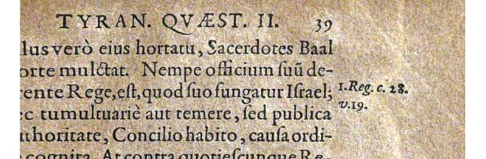
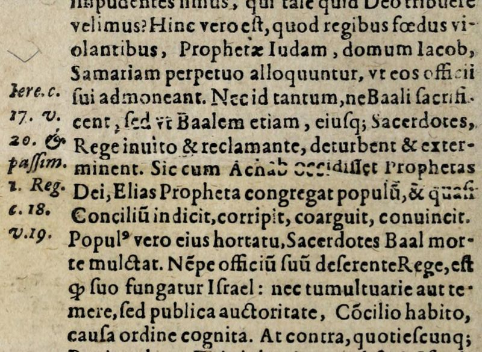

Elijah and the priests of Baal (1610, pp. 38–39)
Latin: 1608 printing, p. 32, scan n47; the same passage is on pp. 38–39 of Lecky’s 1610 printing (n58). Abbreviations expanded (populũ = populum, Popul⁹ = Populus, ꝙ = quod). Highlighted: what Lecky uses.


Hence it is that when kings break the covenant, the prophets continually address Judah, the house of Jacob, Samaria, to remind them of their duty: and not only that they should not sacrifice to Baal, but that they should even cast down and destroy Baal and his priests, against the king’s will and protest. [Jeremiah 17:20 and passim.] So when Ahab had killed the prophets of God, Elijah the prophet gathers the people and, as it were, summons a council, rebukes them, convicts them, convinces them. [1 Kings 18:19.] And the people, at his urging, punish the priests of Baal with death. For when the king abandons his duty, it is for Israel to perform its own: not in tumult or rashly, but by public authority, a council having been held and the cause tried in due order.
Original Latin
Hinc vero est, quod regibus fœdus violantibus, Prophetæ Iudam, domum Iacob, Samariam perpetuo alloquuntur, ut eos officii sui admoneant. Nec id tantum, ne Baali sacrificent, sed ut Baalem etiam, eiusque Sacerdotes, Rege invito & reclamante, deturbent & exterminent. [margin: Iere. c. 17. v. 20. & passim.] Sic cum Achab occidisset Prophetas Dei, Elias Propheta congregat populum, & quasi Concilium indicit, corripit, coarguit, convincit. [margin: 1. Reg. c. 18. v. 19.] Populus vero eius hortatu, Sacerdotes Baal morte mulctat. Nempe officium suum deserente Rege, est quod suo fungatur Israel: nec tumultuarie aut temere, sed publica auctoritate, Concilio habito, causa ordine cognita.
Lecky (vol. II, ch. V, text at note 113): the author “quotes, as an applicable precedent, the conduct of the people who at the instigation of Elijah massacred the whole priesthood of Baal”. That is the precedent; but “massacred” hides the author’s insistence that the killing was done by public authority after a council, not by a mob. The second half of Lecky’s sentence (the toleration of an “impious sacred rite” as a cause of rebellion, his p. 60) is not checked here.
Further down the rabbit hole
Sources that Lecky cites in the notes next to the ones that cite this page.
- Knox, The First Blast of the Trumpet against the Monstrous Regiment of WomenThe Scottish reformer’s case that no woman may rule
- Montaigne, EssaisLecky cuts Montaigne short and changes a word
- Hobbes, Leviathan (Latin version), chapter 29Hobbes says classics teach rebellion in monarchies
- Michelet, Louis XIV et la révocation de l’Édit de NantesJurieu stands alone against Bossuet; the gentle Saurin works for Louis XIV
- Noodt and Gronovius, Du pouvoir des souverainsTwo Leiden lectures on liberty, in John Adams’s own copy
- Allen, Inquiry into the Rise and Growth of the Royal PrerogativeAn oath of non-resistance that outlived the Revolution by some thirty years


Backlinks
Every place in Rationalism in Europe that links to this page (generated automatically when the site is built).